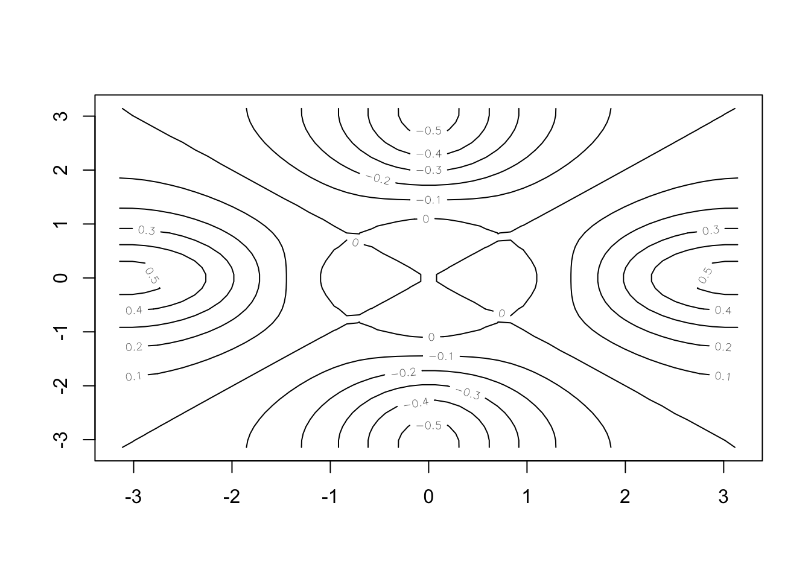
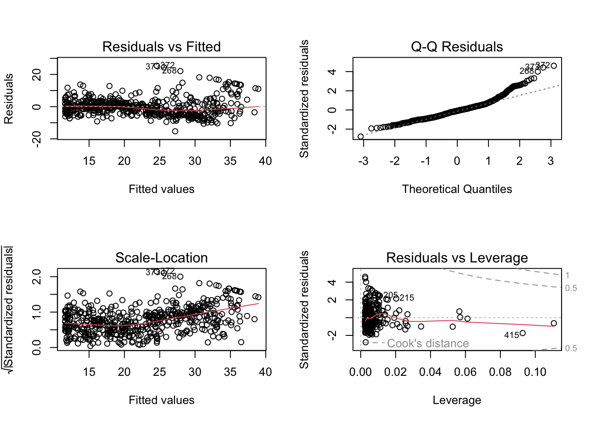

#Load packages for chapter labs
library("ISLR2") #Introduction to Statistical Learning datasets'
library("tidyverse")Intro to Machine Learning Notes
Introduction to Machine Learning/Statistical Analysis and Learning
R Setup
Week 1 Notes
Types of machine learning:
Supervised learning
- Regression models - quantitative/continous output
- Classification models - qualitative/discrete output
Unsupervised learning
- Clustering models - patterns from input data without specified output
Why study statistical learning?
Inference - how does a particular input drive an output variable
Prediction - only the value of the outcome variable is of interest
- Example: “How much rainfall will California have in 2050?”?
Chapter 2: Statistical Learning Introduction
Notes
Shared assumptions of linear and non-linear statistical models for estimating f:
Parametric vs. non-parametric
Flexibility (complexity) vs. interpretability
- Flexible models are beneficial for prediction
- Interpretable models are beneficial for inference
Supervised vs. unsupervised learning
- Unsupervised has no specified outcome variable
How to determine the best statistical model for a problem
Quality of fit
Variance/Bias tradeoff
- Variance: the amount by which \(\hat{f}\) would change if estimated with a different training set
- Bias: the error that is introduced by approximating a real-life problem, which may be extremely complicated, by a much simpler model.
- In general, with more flexible methods, variance increases and bias decreases
Inference vs. Prediction
- Sometimes both are of interest, but often only one is of primary interest. The goals of the analyst here are the primary driver in selecting a model
How do we estimate f?
Training data used to estimate f
Parametric approach
Step 1: Specify an estimated functional form for f (i.e. a linear function)
Step 2: Training data is used to estimate the parameters of the function
Disadvantage of parametric methods: not well suited to estimate a function for a complex dataset
Non-parametric approach
Avoids the assumption of a particular functional form for f
Disadvantage: they require very large data sets to make an accurate prediction of f
Why would we ever choose to use a more restrective method instead of a very flexible approach?
- Interpretability, inference, to avoid overfitting
Should we always choose a more complex (flexible) approach when prediction is the objective?
- Only if there is a very large dataset. With a small amount of data, more complexity is not always good
Measuring the Quality of Fit
Mean Squared Error (MSE)
\[ MSE = \frac{1}{n}\sum_{i=1}^n(y_i-\hat{f}(x_i))^2 \]
Training MSE vs. Test MSE
Why does training MSE always decrease with added flexibility?
- With enough flexibility you can get your model to perfectly fit the training data (but test MSE would be much worse)
highest quality of fit does not equal the best predictive model (overfitting)
Lab: Intro to R
c() Create a vector of items
length() Returns the length of a vector
ls() Lists all objects such as data and functions saved in the environment
rm() Remove an object from the environment
matrix(data = , nrow = , ncol =) Create a matrix
sqrt() calculate the square root
rnorm(n) Generates a vector of random normal variables of n sample size
cor(x, y) Calculates the correlation between two sets of numbers
set.seed() Used to set a consistent seed for a random number function
mean() Mean
var() Variance
sd() Standard Deviation
plot() Basic plotting function
countour() Creates a countour plot to represent 3D data
x <- seq(1,10)
x [1] 1 2 3 4 5 6 7 8 9 10x <- 1:10
x [1] 1 2 3 4 5 6 7 8 9 10x <- seq(-pi, pi, length = 50)
y <- x
f <- outer(x, y, function(x, y) cos(y) / (1 + x^2))
contour(x, y, f)
contour(x, y, f, nlevels = 45, add = T)fa <- (f - t(f)) / 2
contour(x, y, fa, nlevels = 15)
image() Produces a heatmap plot
persp() Creates a 3D plot, arguments theta and phi control the viewing angles
image(x, y, fa)
persp(x, y, fa)
persp(x, y, fa, theta = 30)
persp(x, y, fa, theta = 30, phi = 20)
persp(x, y, fa, theta = 30, phi = 70)
persp(x, y, fa, theta = 30, phi = 40)
dim() Dimension function returns the number of rows and columns of a matrix
read.table() Import data
write.table() Export data
Data Frame functions
data.frame() Create a data frame
str() Used to view a list of variables and first few observations in a data table
subset() Used to filter a data table
order() Used to return the order of a vector, can sort a data table
list() Create a list
Chapter 3: Linear Regression
Notes
Inference problem example - which advertising strategy will lead to higher product sales next year?
Simple linear regression is a a method for predicting a quantitative response Y on the basis of a single predictor variable X. A simple model uses the equation:
\[ Y \approx \beta_0 + \beta_1x_1 \] Residual Sum of Squares (RSS) is the sum of differences between the observed vaues and predicted values
Least squares estimation method minimizes RSS to created an estimation line with the equation above. \(\beta_1\) and \(\beta_0\) are computable from the predictors and outcomes in the dataset
Standard Errors for OLS estimates
Hypothesis testing steps - if the regression shows a positive or negative sloped line based on the sample, how can we be sure that it is not actually a flat line in the population?
estimate parameters and standard errors
calculate t-statistic
Find the corresponding p value
- When the t-statistic is large and the p value is low, we can reject the null hypothesis
Accuracy of the model: how well does the model fit the data?
RSE (Residual Standard Error)
- How far on average are the actual outcomes from the prediction line?
\(R^2\) statistic
A proportional measure always between 0 and 1 that shows how much variation in the data is explained by the model
Can \(R^2\) be negative? Technically yes if the model is very bad
F-statistic
- Not about significance but about whether you can reject the null hypothesis for the whole model
Multiple Linear Regression
Important questions in MLR:
Is at least one of the predictors useful in predicting the response? Check with the F-statistic
Do all the predictors help to explain Y, or is only a subset of the predictors useful? Will be covered in Ch. 6
How well does the model fit the data?
Given a set of predictor values, what response value should we predict, and how accurate is our prediction?
Confidence intervals connect the sample variable to the population variable within a certain degree of confidence. A 95% confidence interval says that 95% of random samples will fall within the interval.
Potential problems in MLR:
Lab: Regression in R
Simple Linear Regression
Boston dataset: The outome variable medv is median home value by census tract
library(MASS)
Attaching package: 'MASS'The following object is masked from 'package:dplyr':
selectThe following object is masked from 'package:ISLR2':
Boston#view the first 10 observations of the dataset
head(Boston) crim zn indus chas nox rm age dis rad tax ptratio black lstat
1 0.00632 18 2.31 0 0.538 6.575 65.2 4.0900 1 296 15.3 396.90 4.98
2 0.02731 0 7.07 0 0.469 6.421 78.9 4.9671 2 242 17.8 396.90 9.14
3 0.02729 0 7.07 0 0.469 7.185 61.1 4.9671 2 242 17.8 392.83 4.03
4 0.03237 0 2.18 0 0.458 6.998 45.8 6.0622 3 222 18.7 394.63 2.94
5 0.06905 0 2.18 0 0.458 7.147 54.2 6.0622 3 222 18.7 396.90 5.33
6 0.02985 0 2.18 0 0.458 6.430 58.7 6.0622 3 222 18.7 394.12 5.21
medv
1 24.0
2 21.6
3 34.7
4 33.4
5 36.2
6 28.7#Create a regression equation
attach(Boston)
lm.fit <- lm(medv ~ lstat)
#View the regression results
lm.fit
Call:
lm(formula = medv ~ lstat)
Coefficients:
(Intercept) lstat
34.55 -0.95 #View details about the regression
summary(lm.fit)
Call:
lm(formula = medv ~ lstat)
Residuals:
Min 1Q Median 3Q Max
-15.168 -3.990 -1.318 2.034 24.500
Coefficients:
Estimate Std. Error t value Pr(>|t|)
(Intercept) 34.55384 0.56263 61.41 <2e-16 ***
lstat -0.95005 0.03873 -24.53 <2e-16 ***
---
Signif. codes: 0 '***' 0.001 '**' 0.01 '*' 0.05 '.' 0.1 ' ' 1
Residual standard error: 6.216 on 504 degrees of freedom
Multiple R-squared: 0.5441, Adjusted R-squared: 0.5432
F-statistic: 601.6 on 1 and 504 DF, p-value: < 2.2e-16#See what is stored in the lm.fit list
names(lm.fit) [1] "coefficients" "residuals" "effects" "rank"
[5] "fitted.values" "assign" "qr" "df.residual"
[9] "xlevels" "call" "terms" "model" #Function to view the coefficients of lm.fit
coef(lm.fit)(Intercept) lstat
34.5538409 -0.9500494 #View the confidence interval
confint(lm.fit) 2.5 % 97.5 %
(Intercept) 33.448457 35.6592247
lstat -1.026148 -0.8739505#Generate confidence intervals for given values of lstat
predict(lm.fit, data.frame(lstat = (c(5, 10, 15))), interval = "confidence") fit lwr upr
1 29.80359 29.00741 30.59978
2 25.05335 24.47413 25.63256
3 20.30310 19.73159 20.87461#Generate prediction intervals for given values of lstat
predict(lm.fit, data.frame(lstat = (c(5, 10, 15))), interval = "prediction") fit lwr upr
1 29.80359 17.565675 42.04151
2 25.05335 12.827626 37.27907
3 20.30310 8.077742 32.52846#plot
plot(lstat, medv)
#Add the least squares line to the plot
abline(lm.fit, lwd = 3, col = "red")#Use 'col =' to change the color of the points
plot(lstat, medv, col = "red")
#Use 'pch =' to change the shape of the points
plot(lstat, medv, pch = 20)#Define the point shape directly
plot(lstat, medv, pch = "+")#Define the point shape with a number
plot(1:20, 1:20, pch = 1:20)
par(mfrow = c(2,2))
plot(lm.fit)plot(predict(lm.fit), residuals(lm.fit))
plot(predict(lm.fit), rstudent(lm.fit))
plot(hatvalues(lm.fit))
which.max(hatvalues(lm.fit))375
375 
Multiple Linear Regression
#Run a regression with specified predictors
lm.fit <- lm(medv ~ lstat + age, data = Boston)
summary(lm.fit)
Call:
lm(formula = medv ~ lstat + age, data = Boston)
Residuals:
Min 1Q Median 3Q Max
-15.981 -3.978 -1.283 1.968 23.158
Coefficients:
Estimate Std. Error t value Pr(>|t|)
(Intercept) 33.22276 0.73085 45.458 < 2e-16 ***
lstat -1.03207 0.04819 -21.416 < 2e-16 ***
age 0.03454 0.01223 2.826 0.00491 **
---
Signif. codes: 0 '***' 0.001 '**' 0.01 '*' 0.05 '.' 0.1 ' ' 1
Residual standard error: 6.173 on 503 degrees of freedom
Multiple R-squared: 0.5513, Adjusted R-squared: 0.5495
F-statistic: 309 on 2 and 503 DF, p-value: < 2.2e-16#Run a regression on all the predictor variables in the dataset
lm.fit <- lm(formula = medv ~ ., data = Boston)
summary(lm.fit)
Call:
lm(formula = medv ~ ., data = Boston)
Residuals:
Min 1Q Median 3Q Max
-15.595 -2.730 -0.518 1.777 26.199
Coefficients:
Estimate Std. Error t value Pr(>|t|)
(Intercept) 3.646e+01 5.103e+00 7.144 3.28e-12 ***
crim -1.080e-01 3.286e-02 -3.287 0.001087 **
zn 4.642e-02 1.373e-02 3.382 0.000778 ***
indus 2.056e-02 6.150e-02 0.334 0.738288
chas 2.687e+00 8.616e-01 3.118 0.001925 **
nox -1.777e+01 3.820e+00 -4.651 4.25e-06 ***
rm 3.810e+00 4.179e-01 9.116 < 2e-16 ***
age 6.922e-04 1.321e-02 0.052 0.958229
dis -1.476e+00 1.995e-01 -7.398 6.01e-13 ***
rad 3.060e-01 6.635e-02 4.613 5.07e-06 ***
tax -1.233e-02 3.760e-03 -3.280 0.001112 **
ptratio -9.527e-01 1.308e-01 -7.283 1.31e-12 ***
black 9.312e-03 2.686e-03 3.467 0.000573 ***
lstat -5.248e-01 5.072e-02 -10.347 < 2e-16 ***
---
Signif. codes: 0 '***' 0.001 '**' 0.01 '*' 0.05 '.' 0.1 ' ' 1
Residual standard error: 4.745 on 492 degrees of freedom
Multiple R-squared: 0.7406, Adjusted R-squared: 0.7338
F-statistic: 108.1 on 13 and 492 DF, p-value: < 2.2e-16library(car)Loading required package: carData
Attaching package: 'car'The following object is masked from 'package:dplyr':
recodeThe following object is masked from 'package:purrr':
some#Calculate variance inflation factors
vif(lm.fit) crim zn indus chas nox rm age dis
1.792192 2.298758 3.991596 1.073995 4.393720 1.933744 3.100826 3.955945
rad tax ptratio black lstat
7.484496 9.008554 1.799084 1.348521 2.941491 #Run the regression all predictors except one (age) using the "-" sign
lm.fit1 <- lm(medv ~ . - age, data = Boston)
summary(lm.fit1)
Call:
lm(formula = medv ~ . - age, data = Boston)
Residuals:
Min 1Q Median 3Q Max
-15.6054 -2.7313 -0.5188 1.7601 26.2243
Coefficients:
Estimate Std. Error t value Pr(>|t|)
(Intercept) 36.436927 5.080119 7.172 2.72e-12 ***
crim -0.108006 0.032832 -3.290 0.001075 **
zn 0.046334 0.013613 3.404 0.000719 ***
indus 0.020562 0.061433 0.335 0.737989
chas 2.689026 0.859598 3.128 0.001863 **
nox -17.713540 3.679308 -4.814 1.97e-06 ***
rm 3.814394 0.408480 9.338 < 2e-16 ***
dis -1.478612 0.190611 -7.757 5.03e-14 ***
rad 0.305786 0.066089 4.627 4.75e-06 ***
tax -0.012329 0.003755 -3.283 0.001099 **
ptratio -0.952211 0.130294 -7.308 1.10e-12 ***
black 0.009321 0.002678 3.481 0.000544 ***
lstat -0.523852 0.047625 -10.999 < 2e-16 ***
---
Signif. codes: 0 '***' 0.001 '**' 0.01 '*' 0.05 '.' 0.1 ' ' 1
Residual standard error: 4.74 on 493 degrees of freedom
Multiple R-squared: 0.7406, Adjusted R-squared: 0.7343
F-statistic: 117.3 on 12 and 493 DF, p-value: < 2.2e-16#Another way to change the model using update()
lm.fit1 <- update(lm.fit, ~ . - age)Interaction terms
There are two ways to include interaction terms in the lm() funtion: \(x_1:x_2\) creates an interaction term between the two variables. \(x_1 * x_2\) creates an individual variable for each plus an interaction term.
(\(x_1 * x_2\) is shorthand for \(x_1 + x_2 + x_1:x_2\))
#Run a regression with a predictor variable
summary(lm(medv ~ lstat*age, data = Boston))
Call:
lm(formula = medv ~ lstat * age, data = Boston)
Residuals:
Min 1Q Median 3Q Max
-15.806 -4.045 -1.333 2.085 27.552
Coefficients:
Estimate Std. Error t value Pr(>|t|)
(Intercept) 36.0885359 1.4698355 24.553 < 2e-16 ***
lstat -1.3921168 0.1674555 -8.313 8.78e-16 ***
age -0.0007209 0.0198792 -0.036 0.9711
lstat:age 0.0041560 0.0018518 2.244 0.0252 *
---
Signif. codes: 0 '***' 0.001 '**' 0.01 '*' 0.05 '.' 0.1 ' ' 1
Residual standard error: 6.149 on 502 degrees of freedom
Multiple R-squared: 0.5557, Adjusted R-squared: 0.5531
F-statistic: 209.3 on 3 and 502 DF, p-value: < 2.2e-16Non-linear transformations on predictors
To transform a variable in lm(), use I(). For example, to square a predictor you would use I(x^2).
For higher order variables, use the poly() function.
#Run a regression with a squared predictor term
lm.fit2 <- lm(medv ~ lstat + I(lstat^2))
summary(lm.fit2)
Call:
lm(formula = medv ~ lstat + I(lstat^2))
Residuals:
Min 1Q Median 3Q Max
-15.2834 -3.8313 -0.5295 2.3095 25.4148
Coefficients:
Estimate Std. Error t value Pr(>|t|)
(Intercept) 42.862007 0.872084 49.15 <2e-16 ***
lstat -2.332821 0.123803 -18.84 <2e-16 ***
I(lstat^2) 0.043547 0.003745 11.63 <2e-16 ***
---
Signif. codes: 0 '***' 0.001 '**' 0.01 '*' 0.05 '.' 0.1 ' ' 1
Residual standard error: 5.524 on 503 degrees of freedom
Multiple R-squared: 0.6407, Adjusted R-squared: 0.6393
F-statistic: 448.5 on 2 and 503 DF, p-value: < 2.2e-16#Use anova() to see if the quadratic fit is better than the original linear fit
lm.fit <- lm(medv ~ lstat)
anova(lm.fit, lm.fit2)Analysis of Variance Table
Model 1: medv ~ lstat
Model 2: medv ~ lstat + I(lstat^2)
Res.Df RSS Df Sum of Sq F Pr(>F)
1 504 19472
2 503 15347 1 4125.1 135.2 < 2.2e-16 ***
---
Signif. codes: 0 '***' 0.001 '**' 0.01 '*' 0.05 '.' 0.1 ' ' 1par(mfrow = c(2,2))
plot(lm.fit2)
#Use the poly() function within lm() to generate a regression with higher order polynomials
lm.fit5 <- lm(medv ~ poly(lstat, 5))
summary(lm.fit5)
Call:
lm(formula = medv ~ poly(lstat, 5))
Residuals:
Min 1Q Median 3Q Max
-13.5433 -3.1039 -0.7052 2.0844 27.1153
Coefficients:
Estimate Std. Error t value Pr(>|t|)
(Intercept) 22.5328 0.2318 97.197 < 2e-16 ***
poly(lstat, 5)1 -152.4595 5.2148 -29.236 < 2e-16 ***
poly(lstat, 5)2 64.2272 5.2148 12.316 < 2e-16 ***
poly(lstat, 5)3 -27.0511 5.2148 -5.187 3.10e-07 ***
poly(lstat, 5)4 25.4517 5.2148 4.881 1.42e-06 ***
poly(lstat, 5)5 -19.2524 5.2148 -3.692 0.000247 ***
---
Signif. codes: 0 '***' 0.001 '**' 0.01 '*' 0.05 '.' 0.1 ' ' 1
Residual standard error: 5.215 on 500 degrees of freedom
Multiple R-squared: 0.6817, Adjusted R-squared: 0.6785
F-statistic: 214.2 on 5 and 500 DF, p-value: < 2.2e-16#Generate a regression with a log-transformed variable
summary(lm(medv ~ log(rm), data = Boston))
Call:
lm(formula = medv ~ log(rm), data = Boston)
Residuals:
Min 1Q Median 3Q Max
-19.487 -2.875 -0.104 2.837 39.816
Coefficients:
Estimate Std. Error t value Pr(>|t|)
(Intercept) -76.488 5.028 -15.21 <2e-16 ***
log(rm) 54.055 2.739 19.73 <2e-16 ***
---
Signif. codes: 0 '***' 0.001 '**' 0.01 '*' 0.05 '.' 0.1 ' ' 1
Residual standard error: 6.915 on 504 degrees of freedom
Multiple R-squared: 0.4358, Adjusted R-squared: 0.4347
F-statistic: 389.3 on 1 and 504 DF, p-value: < 2.2e-16Qualitative predictors
lm() automatically generates dummy variables in a regression on a dataset with qualitative variables.
#Preview the Carseats dataset with information about carseat sales
str(Carseats)'data.frame': 400 obs. of 11 variables:
$ Sales : num 9.5 11.22 10.06 7.4 4.15 ...
$ CompPrice : num 138 111 113 117 141 124 115 136 132 132 ...
$ Income : num 73 48 35 100 64 113 105 81 110 113 ...
$ Advertising: num 11 16 10 4 3 13 0 15 0 0 ...
$ Population : num 276 260 269 466 340 501 45 425 108 131 ...
$ Price : num 120 83 80 97 128 72 108 120 124 124 ...
$ ShelveLoc : Factor w/ 3 levels "Bad","Good","Medium": 1 2 3 3 1 1 3 2 3 3 ...
$ Age : num 42 65 59 55 38 78 71 67 76 76 ...
$ Education : num 17 10 12 14 13 16 15 10 10 17 ...
$ Urban : Factor w/ 2 levels "No","Yes": 2 2 2 2 2 1 2 2 1 1 ...
$ US : Factor w/ 2 levels "No","Yes": 2 2 2 2 1 2 1 2 1 2 ...#A regression on Carseats data with all variables and some interaction terms
lm.fit <- lm(Sales ~ . + Income:Advertising + Price:Age, data = Carseats)
summary(lm.fit)
Call:
lm(formula = Sales ~ . + Income:Advertising + Price:Age, data = Carseats)
Residuals:
Min 1Q Median 3Q Max
-2.9208 -0.7503 0.0177 0.6754 3.3413
Coefficients:
Estimate Std. Error t value Pr(>|t|)
(Intercept) 6.5755654 1.0087470 6.519 2.22e-10 ***
CompPrice 0.0929371 0.0041183 22.567 < 2e-16 ***
Income 0.0108940 0.0026044 4.183 3.57e-05 ***
Advertising 0.0702462 0.0226091 3.107 0.002030 **
Population 0.0001592 0.0003679 0.433 0.665330
Price -0.1008064 0.0074399 -13.549 < 2e-16 ***
ShelveLocGood 4.8486762 0.1528378 31.724 < 2e-16 ***
ShelveLocMedium 1.9532620 0.1257682 15.531 < 2e-16 ***
Age -0.0579466 0.0159506 -3.633 0.000318 ***
Education -0.0208525 0.0196131 -1.063 0.288361
UrbanYes 0.1401597 0.1124019 1.247 0.213171
USYes -0.1575571 0.1489234 -1.058 0.290729
Income:Advertising 0.0007510 0.0002784 2.698 0.007290 **
Price:Age 0.0001068 0.0001333 0.801 0.423812
---
Signif. codes: 0 '***' 0.001 '**' 0.01 '*' 0.05 '.' 0.1 ' ' 1
Residual standard error: 1.011 on 386 degrees of freedom
Multiple R-squared: 0.8761, Adjusted R-squared: 0.8719
F-statistic: 210 on 13 and 386 DF, p-value: < 2.2e-16#Use contrasts() to view the coding scheme for a qualitative variable
attach(Carseats)
contrasts(ShelveLoc) Good Medium
Bad 0 0
Good 1 0
Medium 0 1Writing functions in R
#Write a function to load relevant libraries
LoadLibraries <- function() {
library(ISLR2)
library(MASS)
print("The libraries have been loaded.")
}Chapter 4: Classification
Notes
Classification techniques are used when the dependent variable Y is qualitative or categorical.
- Logistic regression
- Estimation process:
- Create probability functions to estimate coefficients based on training data
- Use new probability equation to predict probabilities
- Set a boundary (i.e. .5) to classy to one category or the other
- interpreting coefficients - change in log-odds, not change in probability
- Note: the coefficients estimated in logistic regression are the change in log-odds, however, these can be plugged back into an equation to calculate probability
- Estimation process:
- Bayes Classifier
Calculate probabilities of each classification outcome
Bayes classifier picks the largest probability to assign a class
What kind of data is needed to calculate probabilities in step 1? You need a lot of it to make accurate calculations, and sufficient data is not often available. It can, however, be used with simulated data for examples.
- Linear Discriminant Analysis (LDA)
- Bayes Theorem - used to flip conditional probabilities
- Assumption - the distributions of X are normal or Gaussian
- Assumption - both the outcome distributions have the same variance (not an assumption of QDA)
- Data statistics needed to plug into the equation with two classes and one predictor: \(\sigma, \pi_1, \pi_2, \mu_1, \mu_2\) where \(\sigma\) is the shared variance, \(\pi_1 and \pi_2\) are the prior probabilities of k = 1, 2, and \(\mu_1 and \mu_2\) are the means
- Quadratic Discriminant Analysis (QDA)
- Naive Bayes
Comparison of methods
Lab: Classification Methods in R
names(Smarket)[1] "Year" "Lag1" "Lag2" "Lag3" "Lag4" "Lag5"
[7] "Volume" "Today" "Direction"dim(Smarket)[1] 1250 9summary(Smarket) Year Lag1 Lag2 Lag3
Min. :2001 Min. :-4.922000 Min. :-4.922000 Min. :-4.922000
1st Qu.:2002 1st Qu.:-0.639500 1st Qu.:-0.639500 1st Qu.:-0.640000
Median :2003 Median : 0.039000 Median : 0.039000 Median : 0.038500
Mean :2003 Mean : 0.003834 Mean : 0.003919 Mean : 0.001716
3rd Qu.:2004 3rd Qu.: 0.596750 3rd Qu.: 0.596750 3rd Qu.: 0.596750
Max. :2005 Max. : 5.733000 Max. : 5.733000 Max. : 5.733000
Lag4 Lag5 Volume Today
Min. :-4.922000 Min. :-4.92200 Min. :0.3561 Min. :-4.922000
1st Qu.:-0.640000 1st Qu.:-0.64000 1st Qu.:1.2574 1st Qu.:-0.639500
Median : 0.038500 Median : 0.03850 Median :1.4229 Median : 0.038500
Mean : 0.001636 Mean : 0.00561 Mean :1.4783 Mean : 0.003138
3rd Qu.: 0.596750 3rd Qu.: 0.59700 3rd Qu.:1.6417 3rd Qu.: 0.596750
Max. : 5.733000 Max. : 5.73300 Max. :3.1525 Max. : 5.733000
Direction
Down:602
Up :648
cor(Smarket[,-9]) Year Lag1 Lag2 Lag3 Lag4
Year 1.00000000 0.029699649 0.030596422 0.033194581 0.035688718
Lag1 0.02969965 1.000000000 -0.026294328 -0.010803402 -0.002985911
Lag2 0.03059642 -0.026294328 1.000000000 -0.025896670 -0.010853533
Lag3 0.03319458 -0.010803402 -0.025896670 1.000000000 -0.024051036
Lag4 0.03568872 -0.002985911 -0.010853533 -0.024051036 1.000000000
Lag5 0.02978799 -0.005674606 -0.003557949 -0.018808338 -0.027083641
Volume 0.53900647 0.040909908 -0.043383215 -0.041823686 -0.048414246
Today 0.03009523 -0.026155045 -0.010250033 -0.002447647 -0.006899527
Lag5 Volume Today
Year 0.029787995 0.53900647 0.030095229
Lag1 -0.005674606 0.04090991 -0.026155045
Lag2 -0.003557949 -0.04338321 -0.010250033
Lag3 -0.018808338 -0.04182369 -0.002447647
Lag4 -0.027083641 -0.04841425 -0.006899527
Lag5 1.000000000 -0.02200231 -0.034860083
Volume -0.022002315 1.00000000 0.014591823
Today -0.034860083 0.01459182 1.000000000attach(Smarket)
plot(Volume)Logistic Regression
The glm() function can be used for generalized linear models including logistic regression. Need to include the argument family = binomial to specify logistic regression as the method.
#Construct a logistic regression model to predict the qualitative variable Direction
glm.fits <- glm(
Direction ~ Lag1 + Lag2 + Lag3 + Lag4 + Lag5 + Volume, data = Smarket, family = binomial
)
summary(glm.fits)
Call:
glm(formula = Direction ~ Lag1 + Lag2 + Lag3 + Lag4 + Lag5 +
Volume, family = binomial, data = Smarket)
Coefficients:
Estimate Std. Error z value Pr(>|z|)
(Intercept) -0.126000 0.240736 -0.523 0.601
Lag1 -0.073074 0.050167 -1.457 0.145
Lag2 -0.042301 0.050086 -0.845 0.398
Lag3 0.011085 0.049939 0.222 0.824
Lag4 0.009359 0.049974 0.187 0.851
Lag5 0.010313 0.049511 0.208 0.835
Volume 0.135441 0.158360 0.855 0.392
(Dispersion parameter for binomial family taken to be 1)
Null deviance: 1731.2 on 1249 degrees of freedom
Residual deviance: 1727.6 on 1243 degrees of freedom
AIC: 1741.6
Number of Fisher Scoring iterations: 3